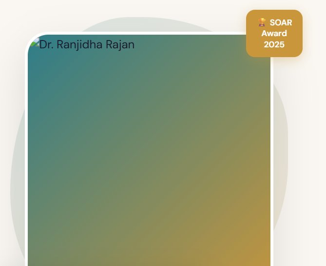

Department of Computer Sciences · MSU Denver
PhD, Learning Analytics · EdD, National University
Educator, researcher, and innovator at the intersection of AI, data science, and computer science education. Passionate about inquiry-based learning, open educational resources, and building inclusive STEM communities.

Scholarship of Teaching
Committed to innovative, student-centered pedagogy integrating AI tools, open educational resources, and inquiry-based learning frameworks.
Foundational programming concepts, computational thinking, and algorithm design for CS students.
Digital logic, assembly language, memory systems, and computer architecture fundamentals.
Language paradigms, semantics, and type systems. Students build and evaluate code-generating AI bots.
Process management, memory, file systems, and concurrency with real-world OS design principles.
Relational models, SQL, normalization, transactions, and database design principles.
Industry-sponsored capstone projects with real external stakeholders. Multiple students secured positions with partner organizations.
Cross-platform mobile application design and development using modern frameworks.
Visual encoding, storytelling with data, accessible design, and rhetorical visualization techniques.
Designed for MSU Denver's Career Launchpad — accessible, practice-focused ML course for adult learners and professionals.
Directed Student Learning
Mentoring students in cutting-edge research at the intersection of AI, data science, and education.
Yujin Kim — Evaluating RAG model performance across factual, conceptual, and reasoning-based question types for explainable AI systems.
Elicia Perez — Comparing PCA and t-SNE for visualizing social network clusters in a real-world STEM collaboration dataset.
Urvi Pal — Examining how generative AI enhances business intelligence through adaptive data visualization and automated analytic workflows.
Vincent Cordova — Exploring scalability of Raspberry Pi clusters in distributed computing environments.
Ashley Aguilar — Using NLP and LSTM models to visualize semantic similarity in discussion board data for educational feedback.
Edom Eshete — Machine learning tool to visualize discourse coherence in online discussion boards using NLP.
Scholarship & Publications
Contributing to the scholarship of teaching and learning, AI in education, and computer science pedagogy through peer-reviewed publications and conference presentations.
Rajan, R. — IEEE/PPIG (VL/HCC 2024), Liverpool, UK. Examines innovative approach to teaching CS ethics through adapted OER within an Inquiry-Based Learning framework.
View Paper ↗Geinitz, S. R., Rajan, R., Peprah, K., Schmidt, K. C., Singh, S., Jay, S. M. — Springer. Results of a SoTL Faculty Learning Community on Generative AI adoption across disciplines.
View Paper ↗McKinney, L., Sinley, R.C., Daughtrey, C., Ansburg, P., Rajan, R., et al. — NACE Journal, May 2021. Faculty perceptions on career preparation importance and practice at MSU Denver.
Ansburg, P., Daughtrey, C., Eaker, R.L., Lopez, J.R., McKinney, L., Meyer, J., Rajan, R., Sinley, R.C. — Marketing Educators' Association Conference Proceedings 2021.
Cortinovis, R., Rajan, R. — PPIG 2022, Milton Keynes, UK. User evaluation of an educational CPU visual simulator in an Open Pedagogy/OER-enabled project.
Arundhathi, B., Athira, A., Rajan, R. — Advances in Intelligent Systems and Computing (pp. 479-486). Springer Singapore.
DOI Link ↗Rajan, R. — EdD Dissertation, ProQuest. Explored faculty experiences using Community of Inquiry (CoI) theory and Social Presence Model with epistemic network visualization.
In Progress
Investigating how Generative AI can support student inquiry in data visualization through the 5E cycle (Engage, Explore, Explain, Elaborate, Evaluate), evaluating question quality and inquiry depth.
Exploring the dynamic interplay of perceptions between students and faculty in academic contexts using qualitative and quantitative approaches.
Study of 2,902 college students exploring financial stress impact using wrist sensors and machine learning (J48 and random forests), achieving up to 74% prediction accuracy.
Measuring faculty attitudes towards research activities at institutions recognized primarily for teaching excellence.
Funded Research
Modernizing the Colorado STEM Ecosystem to a secure, open-source digital platform centralizing STEM opportunities, mentors, and funding across the state.
Developing a multifunctional app serving as a gateway to a visualization platform for mapping systems Kumu and facilitating matchmaking for the Colorado STEM Ecosystem.
Created an accessible AI and Machine Learning OER with practical examples, visual explanations, and hands-on activities for introductory learners.
Implemented a visualization tool for Canvas discussion boards to improve the student feedback system using learning analytics.
Creating OER materials for "Programming Concepts" to support underprepared students in introductory programming, co-created with three undergraduate female students.
Adopted OER resources enabling 88 students to complete courses without purchasing textbooks, reducing financial burden significantly.
Institutional & Community
Active contributor to departmental, college, university, and community initiatives promoting STEM education and inclusivity.
Leading curriculum development, alignment with program outcomes, and assessment practices.
Evaluating applications, developing interview questions, and recommending candidates. Successfully hired two lecturers.
Tracking learning outcomes, coordinating curriculum across sections, and ensuring academic quality.
Reviewing and approving proposed changes to course offerings, degree programs, and academic policies at the college level.
CS Department representative. Investigating and proposing strategies to increase inclusivity for diverse faculty, staff, and students.
Providing strategic guidance to the Center for Advanced STEM Education, promoting excellence and inclusive equity in STEM.
Leading initiatives promoting gender equity, professional development, and inclusive environment. Organizing scholarship events and conferences.
Developed modules for a foundational AI course for MSU Denver's 2,500+ faculty, staff, and administrators.
Defining data standards, reviewing data-related policies, and promoting best practices in data literacy.
Working on first-year student retention improvement, reviewing enrollment trends and current programs.
Supporting campus chapter of Girls Who Code, helping women in tech build belonging and community through weekly meetings.
Guided faculty through effective teaching practices, facilitating discussion, mentoring, and recognizing teaching improvements.
Organized free coding camps for girls aged 13–18 (2022, 2023, 2024). Topics included AI, Data Science, creative coding, and MicroBit hardware. 2024 camp held at CS Department, AES250.
Mentored three high school students on a Computer Science project. All three completed the internship successfully.
"Navigating the AI Revolution" — Panel discussion for Workforce 50+ on AI's impact, guiding older individuals reentering the job market.
"Learning by Design: Thriving in a Fast-Moving Tech World" — interactive design thinking session for women in tech on AI-era upskilling.
Reviewed four papers across Computing Education Research, Experience Reports and Tools, and Position and Curricula Initiative categories.
Elected Student Poster Chair for CCSC Rocky Mountain 2024 conference. Managed submissions, display, and presentation logistics.
Member of the world's largest educational and scientific computing society. Active in computing education research.
Recognition
Recognized for excellence in teaching, research, workforce development, and service to the MSU Denver community.
MSU Denver's pinnacle individual award, celebrating employees who live the CADRE values and positively impact student success.
Recognizing effectiveness of teaching practices via multiple modes: student ratings, peer recommendations, and assessment techniques.
Recognizing outstanding contributions to workforce development by bridging academics and industry through first-ever industry-sponsored capstone courses with DeNOVO Solutions, DIA, and Jefferson County.
Recognition for exceptional service to the Applied Sciences Division at the CHAS College.
Initiated as a member for securing 3.9+ GPA in EdD program in Learning Analytics.
Selected for the Cultural Competence in Computing Fellows Program at Duke University, addressing DEI in computing environments.